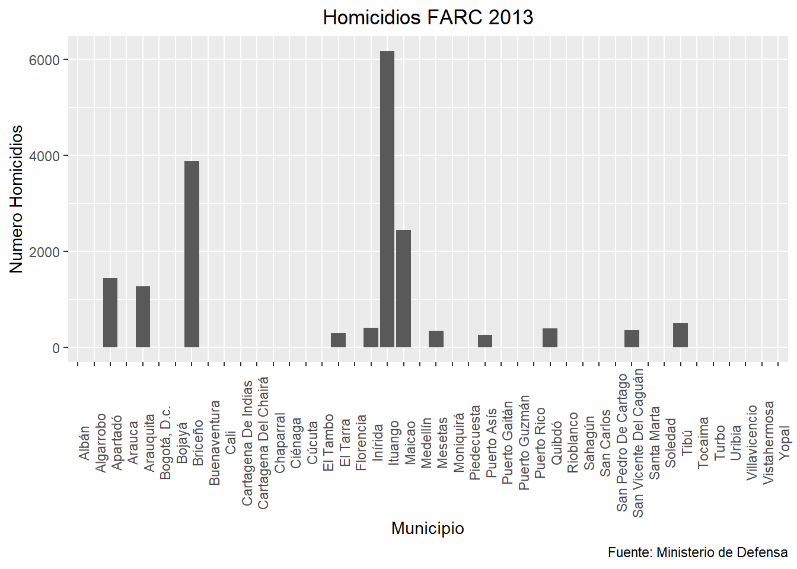
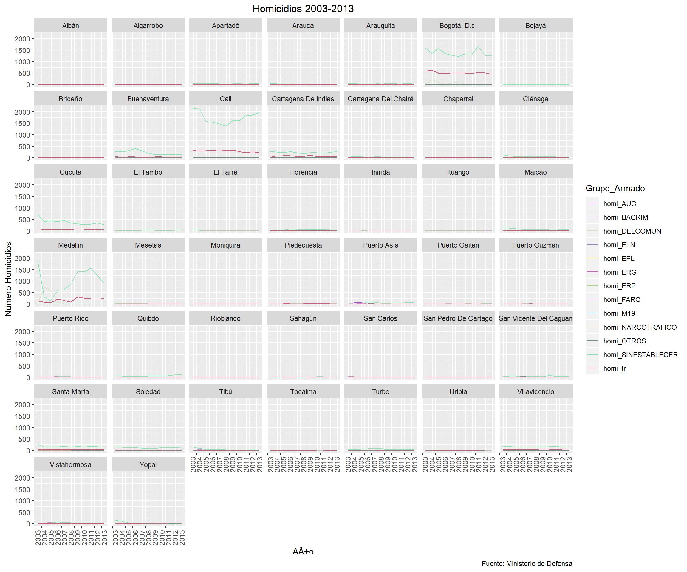
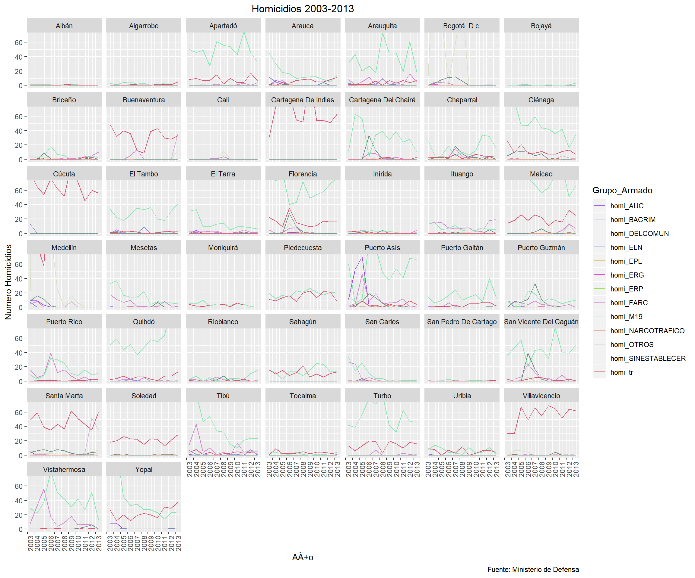
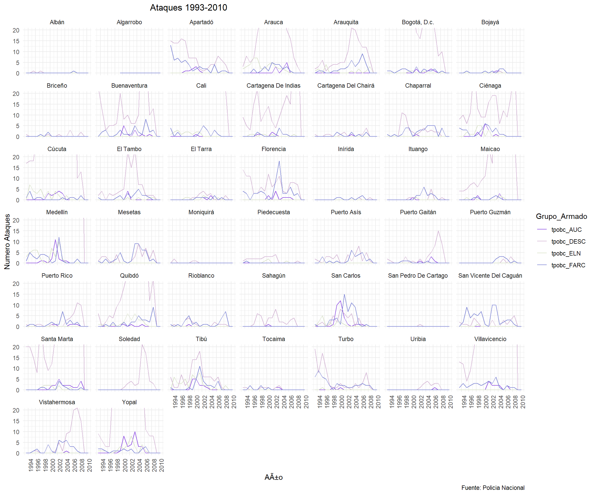
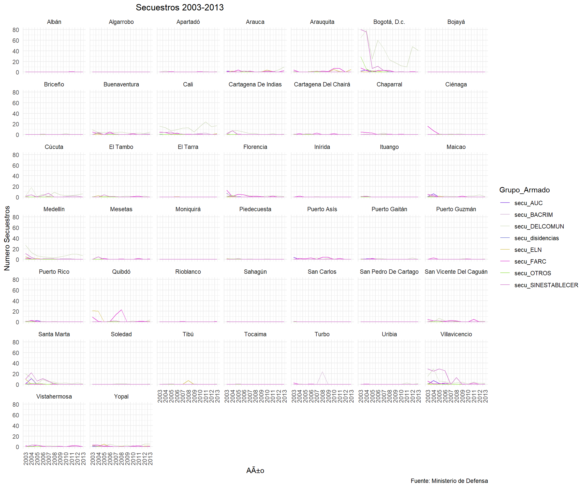
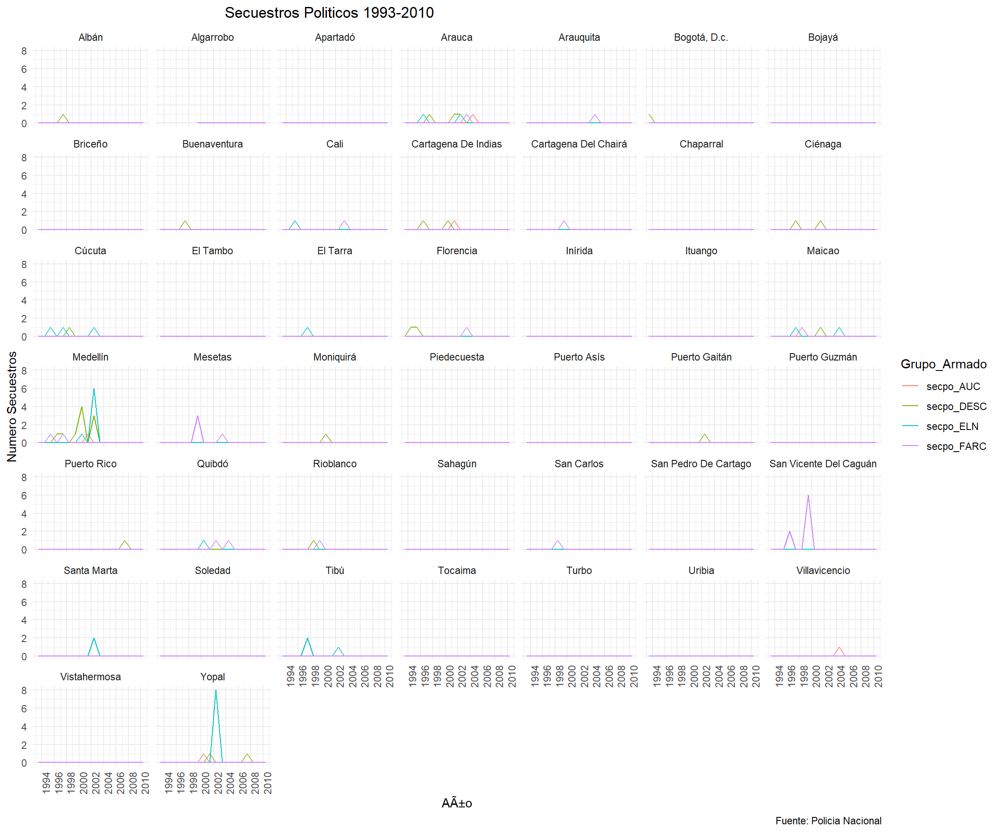
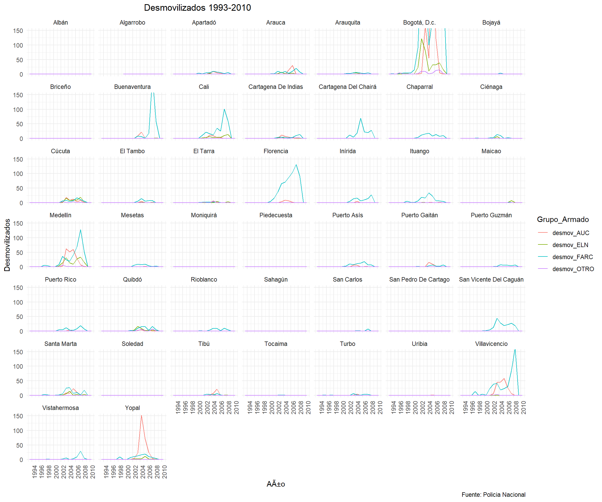

library(readstata13)
library(tidyr)
library(dplyr)
library(ggplot2)
library(data.table)
library(readxl)
library(doBy)
library(vtable)
library(plyr)
library(gridExtra)
library(grid)datos_acdivoca <- as.data.table(read_excel('ACDI-VOCA - Base de Datos y Tabulados_F.xlsx'))
datos_cede_conflicto <- as.data.table(read.dta13("PANEL_CONFLICTO_Y_VIOLENCIA.dta",
encoding="latin1", fromEncoding="UTF-8",
convert.factors = TRUE, generate.factors = TRUE,
nonint.factors=TRUE))#Hacer análisis con la base de datos del 2013
datos_cede_conflicto_2013 <- datos_cede_conflicto[ano=='2013']
#Limpiar el código ID de la base acdivoca. Hay ciertos municipios que empiezan con un '0' y hay que quitarlo.
datos_acdivoca$MPIO_IK <- ifelse(startsWith(datos_acdivoca$MPIO_IK,"0"),
sub("0{1}","",datos_acdivoca$MPIO_IK, ignore.case=TRUE),
datos_acdivoca$MPIO_IK)
setnames(datos_acdivoca, 'MPIO_IK', 'codmpio') #Para que el merge sea más fácil
datos_acdivoca$codmpio <- as.character(datos_acdivoca$codmpio)
datos_cede_conflicto_2013$codmpio <- as.character(datos_cede_conflicto_2013$codmpio)
datos_cede_conflicto$codmpio <- as.character(datos_cede_conflicto$codmpio)
# 1. Meter municipio en codigo
Nombre_cod_municipio <- datos_acdivoca[,c('Municipio','codmpio')]
Nombre_cod_municipio$codmpio <- as.character(Nombre_cod_municipio$codmpio)
# 2. Eliminar las filas repetidas
Nombre_cod_municipio <- Nombre_cod_municipio[!duplicated(Nombre_cod_municipio),]
# 3. Merge conflicto con 44 municipuos (Asà queda con los mismos municipios del acdivoca)
conflicto_44 <- merge(datos_cede_conflicto, Nombre_cod_municipio, by='codmpio', all.y=T)
# 4. Convertir ano en numero
conflicto_44$ano <- as.Date(conflicto_44$ano, '%Y')#Acdivoca con Conflicto_CEDE_2013 --- por municipio
merge_acdi_cede <- merge(datos_acdivoca,datos_cede_conflicto_2013, by= 'codmpio')
#Revisar si el merge quedó bien hecho
length(intersect(merge_acdi_cede$codmpio,datos_cede_conflicto$codmpio)) # ---> 44 municipios## [1] 44# Nuevo data table solo de medellÃn
Medellin = merge_acdi_cede[Municipio == "MedellÃn"]
# Gráfico Homicidios FARC en 2013
ggplot(merge_acdi_cede,
aes(x = Municipio, y = homi_FARC)) +
geom_col() +
labs(y='Número Homicidios', title='Homicidios FARC 2013', caption="Fuente: Ministerio de Defensa") +
theme(plot.title = element_text(hjust = 0.5), axis.text.x = element_text(angle=90))
ggsave('Numero_homicidios_FARC_2013.png', height = 8, width = 6)# Plot
ggplot(conflicto_44,
aes(x=ano, y = homi_FARC)) +
geom_line() +
facet_wrap(~Municipio) +
labs(y='Número Homicidios', title='Homicidios FARC 2003-2013', x= 'Año',caption="Fuente: Ministerio de Defensa") +
scale_x_date(date_breaks = '1 year', date_labels = '%Y',
limits = c(as.Date('2003', format = '%Y'), as.Date('2013', format = '%Y'))) +
theme(plot.title = element_text(hjust = 0.5), axis.text.x = element_text(angle=90))# Gather homicidios por grupo armado en una columna
homi_GA <- grep('homi_{1}', names(conflicto_44), value = T) %>% grep('_pn',.,value = T, invert = T)
# Tidy data table - homicidios de transito
conflicto_44_tidy <- gather(conflicto_44, 'Grupo_Armado', 'Numero_Homicidios', homi_GA)
# Plot sin zoom
# Generate colors
library(randomcoloR)
n <- 13
palette <- distinctColorPalette(n)
#
ggplot(conflicto_44_tidy,
aes(x=ano, y = Numero_Homicidios, color= Grupo_Armado)) +
geom_line() +
scale_color_manual(values = palette) +
facet_wrap(~Municipio) +
labs(y='Número Homicidios', title='Homicidios 2003-2013', x= 'Año', caption="Fuente: Ministerio de Defensa") +
scale_x_date(date_breaks = '1 year', date_labels = '%Y',
limits = c(as.Date('2003', format = '%Y'), as.Date('2013', format = '%Y'))) +
theme(plot.title = element_text(hjust = 0.5), axis.text.x = element_text(angle=90))
# Plot con Zoom
ggplot(conflicto_44_tidy,
aes(x=ano, y = Numero_Homicidios, color= Grupo_Armado)) +
geom_line() +
scale_color_manual(values = palette) +
facet_wrap(~Municipio) +
labs(y='Número Homicidios', title='Homicidios 2003-2013', x= 'Año', caption="Fuente: Ministerio de Defensa") +
scale_x_date(date_breaks = '1 year', date_labels = '%Y',
limits = c(as.Date('2003', format = '%Y'), as.Date('2013', format = '%Y'))) +
theme(plot.title = element_text(hjust = 0.5), axis.text.x = element_text(angle=90)) +
coord_cartesian(ylim = c(0, 70))
dt1 <- summaryBy(Numero_Homicidios ~ Municipio, conflicto_44_tidy, FUN=c(sum,mean,sd), na.rm=T )
head(dt1, n=20)## Municipio Numero_Homicidios.sum Numero_Homicidios.mean
## 1 Albán 9 0.0625000
## 2 Algarrobo 53 0.3680556
## 3 Apartadó 641 4.4513889
## 4 Arauca 297 2.0625000
## 5 Arauquita 537 3.7291667
## 6 Bogotá, D.c. 21941 152.3680556
## 7 Bojayá 7 0.0530303
## 8 Briceño 110 0.7638889
## 9 Buenaventura 2853 19.8125000
## 10 Cali 22547 156.5763889
## 11 Cartagena De Indias 3398 23.5972222
## 12 Cartagena Del Chairá 420 2.9166667
## 13 Chaparral 322 2.2361111
## 14 Ciénaga 788 5.4722222
## 15 Cúcuta 5052 35.0833333
## 16 El Tambo 358 2.4861111
## 17 El Tarra 178 1.2361111
## 18 Florencia 983 6.8263889
## 19 Inírida 48 0.3333333
## 20 Ituango 209 1.4513889
## Numero_Homicidios.sd
## 1 0.2701657
## 2 1.2832788
## 3 13.5284367
## 4 5.6558884
## 5 10.9482053
## 6 385.1524582
## 7 0.3104883
## 8 2.1870122
## 9 63.1385388
## 10 468.9201787
## 11 64.7945996
## 12 9.8729694
## 13 5.3793000
## 14 16.6430835
## 15 108.4888896
## 16 7.8908517
## 17 4.3708925
## 18 17.9487732
## 19 1.0034904
## 20 3.7896249ataque_GA <- grep("tpobc_{1}", names(conflicto_44), value = T)
conflicto_44_ataque <- gather(conflicto_44, key= "Grupo_Armado", value= "Ataques_Pobl_Civil", ataque_GA)dt2 <- summaryBy(Ataques_Pobl_Civil ~ Municipio, conflicto_44_ataque, FUN=c(sum,mean,sd), na.rm=T )
head(dt2, n=20)## Municipio Ataques_Pobl_Civil.sum Ataques_Pobl_Civil.mean
## 1 Albán 3 0.04166667
## 2 Algarrobo 0 0.00000000
## 3 Apartadó 191 2.65277778
## 4 Arauca 451 6.26388889
## 5 Arauquita 183 2.54166667
## 6 Bogotá, D.c. 544 7.55555556
## 7 Bojayá 11 0.15277778
## 8 Briceño 12 0.16666667
## 9 Buenaventura 282 3.91666667
## 10 Cali 938 13.02777778
## 11 Cartagena De Indias 276 3.83333333
## 12 Cartagena Del Chairá 21 0.29166667
## 13 Chaparral 83 1.15277778
## 14 Ciénaga 294 4.08333333
## 15 Cúcuta 1493 20.73611111
## 16 El Tambo 132 1.83333333
## 17 El Tarra 34 0.47222222
## 18 Florencia 193 2.68055556
## 19 Inírida 8 0.11111111
## 20 Ituango 28 0.38888889
## Ataques_Pobl_Civil.sd
## 1 0.2012286
## 2 0.0000000
## 3 4.2498044
## 4 13.2260872
## 5 4.4276261
## 6 15.9946196
## 7 0.4331256
## 8 0.5307449
## 9 9.2412882
## 10 27.4046219
## 11 9.4242719
## 12 0.7008546
## 13 2.1602016
## 14 7.0225993
## 15 58.8617366
## 16 4.2260093
## 17 0.8553431
## 18 3.9746605
## 19 0.3582255
## 20 1.0688358ggplot(conflicto_44_ataque,
aes(x=ano, y = Ataques_Pobl_Civil, color= Grupo_Armado)) +
geom_line() +
scale_color_manual(values = palette) +
facet_wrap(~Municipio) +
labs(y='Número Ataques', title='Ataques 1993-2010', x= 'Año', caption="Fuente: PolicÃa Nacional") +
coord_cartesian(ylim=c(0,20))+
theme_minimal()+
scale_x_date(date_breaks = '2 year', date_labels = '%Y',
limits = c(as.Date('1993', format = '%Y'), as.Date('2010', format = '%Y'))) +
theme(plot.title = element_text(hjust = 0.3), axis.text.x = element_text(angle=90))
secuestro_GA <- grep("secu_{1}", names(conflicto_44), value = T)
conflicto_44_secuestro <- gather(conflicto_44, key= "Grupo_Armado", value= "Secuestros", secuestro_GA)dt3 <- summaryBy(Secuestros ~ Municipio, conflicto_44_secuestro, FUN=c(sum,mean,sd), na.rm=T )
head(dt3, n=20)## Municipio Secuestros.sum Secuestros.mean Secuestros.sd
## 1 Albán 1 0.01136364 0.1066004
## 2 Algarrobo 0 0.00000000 0.0000000
## 3 Apartadó 7 0.07954545 0.3115254
## 4 Arauca 49 0.55681818 1.3884412
## 5 Arauquita 43 0.48863636 1.3645286
## 6 Bogotá, D.c. 678 7.70454545 18.5529123
## 7 Bojayá 0 0.00000000 0.0000000
## 8 Briceño 3 0.03409091 0.2372672
## 9 Buenaventura 75 0.85227273 1.7455347
## 10 Cali 188 2.13636364 4.7226084
## 11 Cartagena De Indias 38 0.43181818 1.4206640
## 12 Cartagena Del Chairá 11 0.12500000 0.4749471
## 13 Chaparral 20 0.22727273 0.8266714
## 14 Ciénaga 29 0.32954545 1.8614146
## 15 Cúcuta 84 0.95454545 2.4816989
## 16 El Tambo 25 0.28409091 0.6939619
## 17 El Tarra 1 0.01136364 0.1066004
## 18 Florencia 73 0.82954545 1.9488965
## 19 Inírida 3 0.03409091 0.2372672
## 20 Ituango 5 0.05681818 0.2778387ggplot(conflicto_44_secuestro,
aes(x=ano, y = Secuestros, color= Grupo_Armado)) +
geom_line() +
scale_color_manual(values = palette) +
facet_wrap(~Municipio) +
labs(y='Número Secuestros', title='Secuestros 2003-2013', x= 'Año', caption="Fuente: Ministerio de Defensa") +
theme_minimal()+
scale_x_date(date_breaks = '1 year', date_labels = '%Y',
limits = c(as.Date('2003', format = '%Y'), as.Date('2013', format = '%Y'))) +
theme(plot.title = element_text(hjust = 0.3), axis.text.x = element_text(angle=90))+
coord_cartesian(ylim=c(0,20))ggplot(conflicto_44_secuestro,
aes(x=ano, y = Secuestros, color= Grupo_Armado)) +
geom_line() +
scale_color_manual(values = palette) +
facet_wrap(~Municipio) +
labs(y='Número Secuestros', title='Secuestros 2003-2013', x= 'Año', caption="Fuente: Ministerio de Defensa") +
theme_minimal()+
scale_x_date(date_breaks = '1 year', date_labels = '%Y',
limits = c(as.Date('2003', format = '%Y'), as.Date('2013', format = '%Y'))) +
theme(plot.title = element_text(hjust = 0.3), axis.text.x = element_text(angle=90))
secuestrop_GA <- grep("secpo_{1}", names(conflicto_44), value = T)
conflicto_44_secuestrop <- gather(conflicto_44, key= "Grupo_Armado", value= "Secuestros_Politicos", secuestrop_GA)dt4 <- summaryBy(Secuestros_Politicos ~ Municipio, conflicto_44_secuestrop, FUN=c(sum,mean,sd), na.rm=T )
head(dt4, n=20)## Municipio Secuestros_Politicos.sum Secuestros_Politicos.mean
## 1 Albán 1 0.01388889
## 2 Algarrobo 0 0.00000000
## 3 Apartadó 0 0.00000000
## 4 Arauca 7 0.09722222
## 5 Arauquita 1 0.01388889
## 6 Bogotá, D.c. 1 0.01388889
## 7 Bojayá 0 0.00000000
## 8 Briceño 0 0.00000000
## 9 Buenaventura 1 0.01388889
## 10 Cali 2 0.02777778
## 11 Cartagena De Indias 3 0.04166667
## 12 Cartagena Del Chairá 1 0.01388889
## 13 Chaparral 0 0.00000000
## 14 Ciénaga 2 0.02777778
## 15 Cúcuta 5 0.06944444
## 16 El Tambo 0 0.00000000
## 17 El Tarra 1 0.01388889
## 18 Florencia 3 0.04166667
## 19 Inírida 0 0.00000000
## 20 Ituango 0 0.00000000
## Secuestros_Politicos.sd
## 1 0.1178511
## 2 0.0000000
## 3 0.0000000
## 4 0.2983392
## 5 0.1178511
## 6 0.1178511
## 7 0.0000000
## 8 0.0000000
## 9 0.1178511
## 10 0.1654888
## 11 0.2012286
## 12 0.1178511
## 13 0.0000000
## 14 0.1654888
## 15 0.2559923
## 16 0.0000000
## 17 0.1178511
## 18 0.2012286
## 19 0.0000000
## 20 0.0000000ggplot(conflicto_44_secuestrop,
aes(x=ano, y = Secuestros_Politicos, color= Grupo_Armado)) +
geom_line() +
facet_wrap(~Municipio) +
labs(y='Número Secuestros', title='Secuestros PolÃticos 1993-2010', x= 'Año', caption="Fuente: PolicÃa Nacional") +
theme_minimal()+
scale_x_date(date_breaks = '2 year', date_labels = '%Y',
limits = c(as.Date('1993', format = '%Y'), as.Date('2010', format = '%Y'))) +
theme(plot.title = element_text(hjust = 0.3), axis.text.x = element_text(angle=90))
desmovilizados <- grep("desmov_{1}", names(conflicto_44), value = T) #Seleccionar variables que empiecen con desmov_
desmovilizados <- desmovilizados[-c(2,4,7)]#Limpiar los nombres para poder hacer el gather
conflicto_44_desmovilizados <- gather(conflicto_44, key="Grupo_Armado",
value="Desmovilizados", c("desmov_OTRO","desmov_FARC","desmov_ELN",
"desmov_AUC"))dt5 <- summaryBy(Desmovilizados ~ Municipio, conflicto_44_desmovilizados, FUN=c(sum,mean,sd), na.rm=T )
head(dt5, n=20)## Municipio Desmovilizados.sum Desmovilizados.mean
## 1 Albán 0 0.00000000
## 2 Algarrobo 0 0.00000000
## 3 Apartadó 71 0.97260274
## 4 Arauca 130 1.78082192
## 5 Arauquita 44 0.60273973
## 6 Bogotá, D.c. 3480 47.67123288
## 7 Bojayá 5 0.06849315
## 8 Briceño 1 0.01369863
## 9 Buenaventura 335 4.58904110
## 10 Cali 360 4.93150685
## 11 Cartagena De Indias 94 1.28767123
## 12 Cartagena Del Chairá 178 2.43835616
## 13 Chaparral 90 1.23287671
## 14 Ciénaga 45 0.61643836
## 15 Cúcuta 182 2.49315068
## 16 El Tambo 50 0.68493151
## 17 El Tarra 36 0.49315068
## 18 Florencia 628 8.60273973
## 19 Inírida 94 1.28767123
## 20 Ituango 128 1.75342466
## Desmovilizados.sd
## 1 0.0000000
## 2 0.0000000
## 3 2.2911218
## 4 4.9307611
## 5 1.5068337
## 6 111.3566661
## 7 0.4809934
## 8 0.1170411
## 9 25.4049621
## 10 14.7425393
## 11 2.7359716
## 12 9.5277173
## 13 3.7435891
## 14 2.1578676
## 15 4.7613119
## 16 2.1658762
## 17 1.1195645
## 18 26.2105469
## 19 4.4047936
## 20 5.5221293ggplot(conflicto_44_desmovilizados,
aes(x=ano, y = Desmovilizados, color= Grupo_Armado)) +
geom_line() +
facet_wrap(~Municipio) +
labs(y='Desmovilizados', title='Desmovilizados 1993-2010', x= 'Año', caption="Fuente: PolicÃa Nacional") +
theme_minimal()+
scale_x_date(date_breaks = '2 year', date_labels = '%Y',
limits = c(as.Date('1993', format = '%Y'), as.Date('2010', format = '%Y'))) +
theme(plot.title = element_text(hjust = 0.3), axis.text.x = element_text(angle=90)) +
coord_cartesian(ylim=c(0,150))
ggplot(conflicto_44_desmovilizados,
aes(x=ano, y = Desmovilizados, color= Grupo_Armado)) +
geom_line() +
facet_wrap(~Municipio) +
labs(y='Desmovilizados', title='Desmovilizados 1993-2010', x= 'Año', caption="Fuente: PolicÃa Nacional") +
theme_minimal()+
scale_x_date(date_breaks = '2 year', date_labels = '%Y',
limits = c(as.Date('1993', format = '%Y'), as.Date('2010', format = '%Y'))) +
theme(plot.title = element_text(hjust = 0.3), axis.text.x = element_text(angle=90)) +
coord_cartesian(ylim=c(0,30))